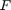
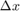
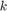
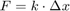
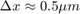

BFPTool GUI documentation
This file covers major aspects of the tool GUI.
Contents
Video playback and tools
Section covers the tools related to video file.
- Open a video file
In the panel Open a video, user can either directly type full video file path or click the Browse button and navigate to the file. Once the file has been selected, it can be opened by clicking Open. The video will load and the first frame will be displayed in the video player. Data will be populated in the Video information panel in the upper left corner.
- Navigate through the video
In the panel Video commands, the buttons allow user to control the video. Play continuously advances the video by 1 frame rate, Fast forward and Rewind continuously shift the video forward or backwards by 5 frames (default value).
The button X/X is a frame go to button. Clicking the button opens an edit field and user can input the index of a frame to display.
Mouse scroll button advances the video by 1 frame forward or backward, if the pointer hovers over the video canvas.
- Analyse the video
Contrast analysis can be run by clicking Analyse contrast. The invoked function calculates standard deviation of intensity for each frame of the video (note this can take some time for long videos), this is so-called SD2 contrast metric. The function also calculates rSD2 contrast metric, which is a running standard deviation of the SD2 metric (i.e. it reports local changes in intensity distribution in time). The contrast metric can be displayed in the Graph panel in the upper right corner. The radio button SD2/rSD2 in panel Tracking allows to switch between the two contrast metrics.
Both contrast metrics are scaled to have maximal value of 1. Therefore, all changes of the metric are only relative for each video.
The contrast metric provides information about image quality and suitability for testing. If the SD2 decreases considerably (by >5-10%), the pipette patter becomes difficult to match precisely and the bead difficult to recognize. In some cases, the SD2 remains reasonably high, but is highly variable -- such behaviour is easy to spot as a peak in rSD2. Both metrics help user to determine, which sections of the captured recording should be excluded as the quality is insufficient for tracking.
- Overlay and export the results
Once the tracking has been performed, the results can be laid over the original video recording. The bead is delineated by a red ring while the anchor point of the pipette tip is marked by a small blue ring. The overlay is switched on by checking the box Display track info in the Video commands panel.
The video with overlay can be exported into an external video file using the button Generate film, with framerate (in fps) given by the value in edit field Framerate. To reduce the output size and processing time, source video can be sampled by a factor given in the Sampling field.
The Video information panel contains a button Reframerate (which is active only for TIFF files). The information about framerate in TIFF files can be absent or damaged. The button allows the user to change the framerate of the video after it is imported.
Tracking and calculation settings
This section covers thresholds and other settings for tracking procedures, setting up the input variables, calculation of force and related parameters.
- Selecting a Bead and a Pipette pattern to track
There are two ways to select the bead to track and to delineate the pipette tip pattern:
- An instantaneous selection using controls in the Set interval tab. Once video is open, Select button on the line Selected bead becomes enabled. Clicking the button turns the pointer into cross-hair (on the video canvas)--clicking inside the requested bead and confirming detects and delineates the bead (if video quality allows detection). Similarly, clicking the Select button on the line Selected pattern allows user to draw a delimiting rectangle around the pipette tip to select the pattern to be matched across the defined time interval.
- A selection using lists in panels Pipette pattern and Bead tracking. (These panels are initially hidden, but can be displayed using Show tracking list panel in the Import, export, UI settings panel.) The pipette can be delineated clicking Select in Pipette patterns panel--the pointer turns into cross-hair and user can draw a box around the pipette tip and confirm by clicking the same button. The selection can be saved in the list of patterns clicking the Add button. Currently selected item of the list (i.e. the displayed item of the drop-down menu) can be removed clicking Remove. The bead can be added to a respective list using analogical procedure. Clicking Select in the Bead tracking panel and then clicking into requested bead and confirming, the program detects the bead (if possible). User can then add it to the bead list (the drop-down menu) using the Add button.
The second explained method is useful for more complex trackings. For fragmented videos, one may want to reuse the same pipette pattern across several non-contiguous intervals, or recreate the interval list several times. Also note, that during the selection process, user is prompted to provide supplementary information about the bead (i.e. dark/bright) and pipette (i.e. select the anchor point).
- Setting parameters of tracking
The tracking procedure can be tuned to strike balance between robustness and sensitivity. The panel is initially hidden and can be displayed clicking Show advanced detection panel toggle button on the Import, export, UI settings panel.
- Pipette detection settings panel provides four parameters concerning the pipette. The Correlation thresh defines when the program reacts to decrease of correlation coefficient. If metric decreases below the threshold, procedure calls corrective functions, at (substantially) increased computational costs. These corrections can lead to marginal improvement, but on the other hand can help avert detection failure. Generally, if video contrast is stable during the video, this correlation metric threshold can be decreased. Note that there is an internal correlation threshold of 0.8, below which the program invokes some of the corrective procedures, regardless of the user-provided value. The Contrast thresh is analogical, working with the SD2 contrast (and corrective measures are less aggressive). The Buffer represents the number of consecutive frames frames of failed detection, before the tracking is interrupted. Erode/Dilate edit fields allow to input parameters for a corrective procedure. This procedure attempts to detect also smaller (eroded) and larger (dilated) pattern in a sub-threshold frame, and returns the best match. For poor correlations (around 0.5), the improvement can be as high as 10%. The edit fields set up a range of search, from maximal erosion in pixels on the left by 1-pixel increments to the maximal dilatation in pixels on the right (1-pixel erosion means the border pixels of the pattern are removed, dilatation is inverse process; 2-pixel means the process is applied twice etc.). Note that setting both values to zero deactivates the procedure. Also note that both inputs should be positive numbers.
- Bead detection settings panel provides similar settings for the Bead. Radius range sets the range of possible bead radii (in pixels). The range can be estimated clicking the Radius range button---then clicking into a bead---the program detects the bead (using wide radius range), measures its range and sets optimal radius range accordingly. Buffer is the number of consecutive failed frames before the tracking is aborted. Sensitivity determines the threshold of circle detection, high sensitivity means more detected circles, which might be weak or obscured, raising chances of false positives. Gradient is a threshold for edge detection used to determine pixels on the circular object edge. Finally, if Metric thresh is crossed, the program relaxes settings (i.e. increases sensitivity and lowers gradient threshold) to detect also weak circles and avoid possible detection failure (i.e. no circle is detected).
- Building an interval list
The crucial feature of the tracking is setting up the list of discontinuous intervals to track (if necessary). This technique allows to analyse only frames of interest and avoid video intervals of poor focus or other problems. Intervals can be added to a list using the Set interval tab. On the line interval, initial and final frames of the interval must be supplied. The bead and pipette can be defined directly in the frame (see point Selecting a Bead and a Pipette pattern to trak) or loaded from the lists prepared in the panels Pipette patterns and Bead tracking. If taken from the list, clicking the button List sets the currently selected item of the respective list (i.e the displayed in the drop-down menu). Select button on Pattern anchor line allows user to specify pipette anchor---it is a point of the pipette, the coordinates of which are returned as the pipette coordinates, and used to calculate RBC deformation and force. The button Show displays the selected pipette pattern with the anchor point marked. Finally, the button Add to list adds the currently defined interval into the interval list of the current tool session. The parameters of the list of intervals can be reviewed on the tab List of intervals. Items can be removed from the list by selecting the appropriate check-box Remove (right-most column) and clicking the button Erase.
The last edit filed on the line Interval has a special function. It is the index of the frame, where the bead and the RBC touch under zero load (i.e. the RBC is unstrained) for the particular used pipette pattern. The distance of the anchor point on the pipette and the centre of the bead at this frame are later used, to calculate deformation of the RBC. Note that this frame does not need to belong to the currently set interval (also, the pipette pattern can originate in another interval), but it has to be an analysed frame (in any interval). If the provided index does not belong to any of set-up intervals, the tool initiates a procedure and helps user to set up single-frame interval.
Note that the intervals must be exclusive (though this may be changed in future).
- Tracking
Running the tracking procedure itself is very simple. First, the tracking object (of BFPClass) has to be constructed. This is done simply by clicking Update button on the Tracking panel, after all settings and inputs are ready. The object contains all the settings and parameters set up in the GUI as well as the interval list. Note that whenever GUI settings are changed, the object must be reconstructed by clicking the Update button. Clicking the button Track invokes the tracking procedure of the BFPClass, which cycles through the interval list and tracks the Bead and the Pipette consecutively, according to the passed settings. It uses the contrast analysis (Analyse contrast) data, which are calculated at this point, if not yet available. After the tracking is finished, report is generated, showing the fidelity metrics of the bead and the pipette, marking intervals of lower detection quality (or intervals of rapid movements of the pipette), and providing explicit intervals of uncertain frames. This report can be displayed anytime by clicking View report on the Tracking panel.
- Calculation of the force
Once the tracking is complete, the force can be calculated using the Get Force button on the Tracking panel. The function calculates distance between the centre of the bead and the anchor on the pipette for each frame and compares them to the distance at the frame of reference distance (the frame where the bead and the RBC touch, but the RBC is unstrained---zero load situation). The difference in distance corresponds to the compression/extension of the RBC. The RBC is (in the particular force range) in linear strain-stress regime, that means the force  transduced by the RBC onto the manipulated object is proportional to RBC deformation  through the RBC stiffness , that is . The linear relation is valid up to the deformation , then it begins to over-estimate the force, but usually by no more than 10% (within the range of viable forces). Detailed information about the stress-strain linear relation can be displayed clicking ? button on the Tracking panel. The value of the RBC stiffness is displayed left of the Get Force button---if the text is not well readable due to text scaling issues, click the k button below.
- Probe calibration
The force can be calculated without any calibration of the probe. The program is preset with generic probe data to provide user with an order of magnitude force estimate and the measured values of RBC deformation. To obtain precise measurements, user must perform geometry measurements for the probe. This can be done using Experimental parameters panel (initially hidden, can be displayed using Show experimental data panel on the Export,Import,UI setting panel). The panel contains interactive tools to measure parameters directly in the video. The button Pixel to micron allows user to calibrate the image by measuring a known length (i.e. a scale bar added by the software, the diameter of the standard micro bead etc.). Note that it is always more precise to provide this value directly based on the recording device information. The edit field Pressure represents the difference of pressures in the experimental medium and the pipette interiour (i.e. the aspiration pressure), which has to be provided by the user. RBC radius button allows user to click inside the RBC---after confirming the selection, the RBC is detected (if possible), and its radius is measured automatically. Similarly, Pipette radius allows user to draw a line across the inner diameter of the pipette at the internal RBC apex, the program then calculate the pipette radius based on the line; analogically for the radius of contact between the RBC and bead use the button Contact radius, and measure the radius in the frame of reference distance (see above).
Graphing and fitting tools
The tool supports graphing of 5 quantities. The quantity can be chosen from the drop-down menu on the Tracking panel and displayed in the Graph area in the upper right corner by clicking Plot button. The frame range can be restricted by typing the plotted range in the edit fields right of the Plot button. The check boxes below allow the user to select whether to plot data for bead, pipette or both (for some data, this choice is irrelevant). The options of the drop-down menu are:
- Contrast plots the contrast measure of the of the video. Either SD2 or rSD2, depending on the radio button selection below.
- Force plots the force (calibrated or uncalibrated) calculated based on the tracking results. A deformation values axis in displayed on the right, so even if the probe was not properly calibrated, the deformation information is accurate (if correct reference distance frame was selected).
- Tracks (3D) plots the position of the bead centre and/or pipette anchor point. The third axis represents the time.
- Trajectories (2D) plots the position of the bead centre and/or the pipette anchor point, without time information. All time points are plotted in one plane.
- Metric plots detection metric (i.e. correlation coefficient for the pipette and accumulator array value for the bead).
Note that for the graphs with time abscissa (metric, force, contrast) are clickable. Clicking into the graphing area draws a vertical line and highlights the value of the quantity at the particular time frame, the values ordered pair is printed in the command window and the corresponding video frame is displayed in the video player section. This allows user to quickly review possible unexpected or strange behaviour in the graph.
Plotted graph can be fitted using tools in the Basic fitting panel. The button Choose interval (or later Change interval) is used to restrict the interval of fitting. When clicked, two dots are displayed. Positioning the dots in the field turns them into vertical lines delimiting the interval of fitting, which is confirmed by clicking the same button. The fitting procedures are invoked using the buttons above the interval selection button. Fit line performs a linear fit through the data. If several data lines are present (i.e. the graph is discontinuous), each section is fitted separately. The coefficient is displayed in the graph and printed in the command window. Similarly, the Fit exponential button has the same behaviour, only fits an exponential curve. The last fitting function, Fit plateau scans the data and attempts to find and highlight the plateaux intervals. The conditions for plateaux are defined below. Sensitivity represents the width of the edge detection kernel (the higher the sensitivity, the more data are considered plateau), Thresh is the standard deviation threshold to consider an interval a plateau, and Length is the minimal length (in frames) of plateau to report.
Import/export
The panel Import, export, UI settings allows the user to show/hide some of the panels (using the three labelled toggle buttons). The level of verbosity of the GUI can be changed using the checkbox Verbose, it switches warning dialogs into command window warnings. The edit field titles UI Fontsize allows user to set the global size of the font, to adapt to GUI to various screen sizes. Values above 1 are interpreted as pixels (note also that various systems interpret pixel font size differently), below 1 is normalized to the size of UI object.
The more important part of this panel is import/export section. Source and target have to be set from the drop-down menus. The arrows then show, what is ported where. Not all combinations are supported. Major feature is to export/import session, which represent the current session of the GUI, in form of MAT file. Other options are self-evident.